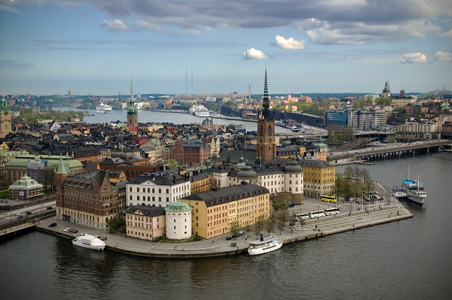
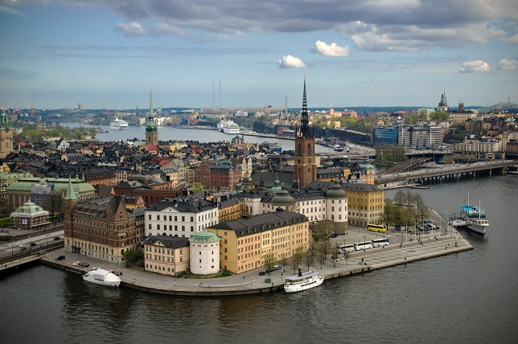

Stockholm
Bienvenue à Stockholm
Disséminée sur 14 îles là où le lac Mälaren rejoint la mer Baltique, Stockholm, cette étincelante étoile du Nord a visiblement tout pour plaire : une inventivité hors norme, des forêts en pleine ville et des rivières assez pures pour une baignade citadine.
La grâce et la beauté de la ville semblent s'étendre à sa population cosmopolite, composée d'innombrables vénus et apollons à la tenue très étudiée. C'est ici que sont nées des marques très chic urbain comme Acne, Nudie et Patrik Söderstam, autant de représentants d'une mode suédoise en plein essor.
Stockholm fait aussi parler d'elle grâce à de talentueux cuisiniers étoilés au Michelin qui pimentent la scène gastronomique, redéfinissent la fusion et font de la capitale suédoise un haut lieu inattendu de la cuisine d'avant-garde.
Comme si cela ne suffisait pas, Stockholm est aussi une capitale du design. Ici, tout est stylé, du club ultra glamour à la poignée de porte en acier, et par de grands noms comme Thomas Sandell et Jonas Bohlin. Aujourd'hui, de nouveaux créateurs ont décidé d'en finir avec le blanc minimaliste des années 1990 et offrent à la ville de nouveaux espaces plus audacieux.
Les lieux à visiter
-
Gamla Stan
Gardes royaux, vieux édifices couleur bonbon et rues pavées en zigzag, la Gamla Stan (vieille ville) semble tout droit sortie d'un livre de contes. La ville est née au XIe siècle dans ce quartier qui regorge d'anecdotes historiques et de merveilles, tels le Kungliga Slottet (château royal) et l'étonnant Livrustkammaren, qui présente épées et mules royales mais aussi le contenu de l'estomac d'un régicide. Heureusement, tourisme de masse et usines à souvenirs se concentrent sur Västerlånggatan et Stora Nygatan, facilement contournables si vous n'éprouvez guère d'intérêt pour les Vikings en céramique et les porte-clés à cheval de Dalécarlie. Dans les ruelles secondaires, vous découvrirez une ville qui n'a quasi pas changé depuis le Moyen Âge. Sur des placettes se cachent des échoppes poussiéreuses, et le seul bruit alentour est celui de vos pas sur les pavés.
Ne manquez pas l'intérieur de la sublime Tyska Kyrkan, une église allemande du XVIe siècle – avec un peu de chance, vous y entendrez l'organiste répéter. Sinon, peut-être trouverez-vous l'inspiration devant un thé d'Iran chez Chaikhana. Non loin, Österlånggatan (carte, E4), fut pendant des siècles l'une des rues les plus animées de Gamla Stan : c'est aujourd'hui une artère paisible, bordée d'ateliers d'artisans et de boutiques comme l'écolo-chic Ekovaruhuset, l'atelier de céramique Gertrud Båge et l'adorable magasin pour enfants Kalikå. Elle accueille aussi quelques restaurants excellents, dont le Bistro Ruby, très couru, ou Den Gyldene Freden, temple au romantisme vieux de 290 ans, idéal pour découvrir la cuisine suédoise traditionnelle. Ainsi, l'histoire est omniprésente à Gamla Stan. Sa cathédrale, la Storkyrkan, a vu défiler les siècles et les couronnements, tandis que Stortorget, fut le théâtre en 1520 de l'effroyable « bain de sang de Stockholm » (voir Hier et aujourd'hui), où 82 nobles et chevaliers suédois furent décapités. Aujourd'hui, vous risquez davantage de perdre la tête devant les minauderies du personnel de Chokladkoppen, où aux beaux jours, installés aux tables sur la place, certains aiment observer les passants cachés derrière leurs lunettes Gucci. Si vous parvenez à résister à un énième chocolat chaud, il faut aller dîner chez le Rouge, antre très Belle Époque parisienne au bar tout de velours rouge, où officient deux des chefs les plus en vue de Stockholm.
-
Moderna Museet
Mauvaise nouvelle : après un bref flirt avec la gratuité, le Moderna Museet fait à nouveau payer l'entrée. Bonne nouvelle : sa somptueuse collection d'art moderne est plus pointue que jamais, avec notamment l'extravagante installation de Paul McCarthy Ketchup Sandwich, les Insomnias peintes par Dorothea Tanning et sa mousseuse et délicieuse sculpture Don Juan's Breakfast. Les œuvres de Tanning, acquises récemment, s'intègrent dans l'ambitieux projet « Deuxième musée selon nos vœux » (Det Andra Önskemuseet), qui a nécessité 50 millions de couronnes de subventions d'État jusqu'en 2008 afin que le musée célèbre son cinquantième anniversaire par une meilleure représentation des femmes dans ses collections.
Le Moderna Museet n'a pourtant rien d'un temple de la réflexion. Dans les années 1960, cette institution encore balbutiante frayait déjà avec des provocateurs de la trempe d'Andy Warhol, de Jasper Johns ou de Niki de Saint Phalle, ébranlant les a priori artistiques de la Suède et débutant une collection contemporaine aujourd'hui considérée comme l'une des meilleures d'Europe. La première rétrospective internationale sur Warhol eut lieu en 1968 au Moderna Museet, et c'est ici que l'on entendit pour la première fois sa fameuse citation inexacte, « À l'avenir, tout le monde aura droit à son quart d'heure de célébrité mondiale ». Le papier peint fluo couvert de vaches qui tapisse les murs du musée rend hommage à cet événement, lors duquel Warhol en avait couvert le bâtiment. Ce bâtiment d'exercice, où fut d'abord aménagé le Moderna Museet, abrite aujourd'hui l'Arkitekturmuseet. Des problèmes de moisissure dans le nouvel écrin du musée, conçu par l'Espagnol Rafael Moneo, l'obligèrent à fermer pendant deux ans. Le Moderna Museet a fait un retour triomphal en 2004, offrant un nouveau bar à expresso dans le hall (ne manquez pas l'excellente vidéo de présentation des expos temporaires) et une déco flambant neuve dans la boutique et le restaurant du musée. L'endroit, avec sa vue splendide et son chef primé, est d'ailleurs devenu depuis peu une vedette à part entière, attirant des adeptes qui ne viennent que pour lui. Mais ne partez pas sans aller admirer les œuvres incontournables, tels le dérangeant The State Hospital d'Edward Kienholz, la fameuse Fontaine de Marcel Duchamp et le mystérieux Énigme de Guillaume Tell de Salvador Dalí, dont les Stockholmois débattent depuis des générations. Ne ratez pas non plus le mouton dans un pneu du Monogram de Robert Rauschenberg, dont la collaboration avec le Moderna Museet fut couronnée en 2007 par une grande rétrospective ; l'écriture tremblante de l'artiste, décédé en 2008, est devenue le logo officiel du musée.
-
Design Suédois
À Stockholm, le design n'est pas frivole : il est de rigueur. Du mobilier à l'habillement, les designers sont des dieux et les boutiques de créateurs leurs temples. Commencez votre pèlerinage dans le quartier ultra stylé d'Östermalm, où se trouve l'institution du design Svenskt Tenn. Non loin, Sibyllegatan (carte, C4) est jalonnée de showrooms de déco et de mobilier légendaires, tel Modernity, dont la collection de fauteuils, tables, vases et bijoux du XXe siècle fait jaser jusqu'à Manhattan. Plus au nord, à Vasastaden, musardez chez les antiquaires d'Upplandsgatan (carte, D2) pour trouver des luminaires rétro, ou passez chez Platina, tout près, pour des objets de l'avant-garde suédoise créés par Agnieszka Knap, Annika Åkerfelt et consort. Kungsholmen, injustement méconnu, abrite l'immense complexe ROOM, dévolu au design d'intérieur, l'innovant Frank Form et le quatuor original Defyra. De l'autre côté du Riddarfjärden, Södermalm est le centre artistique de Stockholm, avec des coopératives d'artisans et l'icône du design suédois qu'est 10 Swedish Designers. Pour de nouveaux talents suédois, rendez-vous chez DesignTorget, où vous trouverez toujours des objets de demain conçus par quelque étoile montante.
-
Östermalms saluhall
Östermalms Saluhall, plus qu'un simple marché d'alimentation, est un véritable événement gastronomique. C'est au déjeuner, le vendredi ou le samedi, que l'on découvre le mieux son magnifique décor fin de siècle et ses étals regorgeant des meilleurs produits du pays, homards fraîchement pêchés, fromages au cumin, succulentes plaquebières ou truffes au champagne artisanales. Les effluves de café moulu emplissent l'air, et une foule constante se presse entre dames comme il faut, chefs renommés et quelque membre de la famille royale venu y faire des emplettes pour le palais. Pourtant, malgré cette clientèle illustre, ce temple du bon goût reste extrêmement accueillant. Les vendeurs ont souvent été employés à l'étal concurrent, les habitués y ont leur ardoise, et une simple question peut tourner au débat enflammé sur le hareng parfait. Vous ne regretterez pas une heure de flânerie ici. L'expresso de Robert's Coffee comblerait même un Napolitain, les étals de fruits et légumes sont dignes d'être exposés dans un musée et l'éventail de délices scandinaves ne manquera pas de vous mettre l'eau à la bouche… Dans ce cas, direction Lisa Elmqvist pour une portion de skagen (des canapés nappés de crevettes à la mayonnaise et à l'aneth saupoudrés d'œufs d'ablette). N'oublions pas le bâtiment, couronné de flèches en briques rouges et de belle ferronnerie, que l'on doit à Isak Gustav Clason, le célèbre architecte du Nordiska Museet.
-
Stockholm en ballon
Comme Karlsson volant au-dessus de Stockholm dans les histoires d'Astrid Lindgren, offrez-vous un vol en montgolfière. À 300 m au-dessus du sol, la capitale suédoise déborde de charme et semble émanée d'un conte de fées : admirez les tours élancées, les maisons qui ont l'air faites de pain d'épices et l'azur de la Baltique ondoyant entre des milliers d'îles. Ces sorties en ballon ont lieu de mai à fin septembre. Pour 995 à 2 000 Skr, vous vous envolerez loin, très loin pendant près d'une heure. Cependant, l'ensemble de la sortie peut durer jusqu'à cinq heures, conclues généralement par un arrosage au champagne si c'était votre baptême de montgolfière, et un petit pique-nique pour reprendre vos esprits. Les longs crépuscules des matins et des soirs d'été permettent ces échappées dans les airs, mieux, ils les subliment. Naturellement, ces panoramas magiques sont très recherchés, et mieux vaut réserver avec un mois d'avance. Emportez vos jumelles et n'oubliez pas de vérifier la politique d'annulation de votre prestataire, car les vols ne sont jamais confirmés avant le jour même. Pour des adresses, rendez-vous.
-
Djurgården
À quelques minutes de Norrmalm et du centre-ville, les parcs et forêts, les collines verdoyantes et les moutons qui paissent paisiblement sont un antidote merveilleux à la frénésie citadine. Pour les Stockholmois nés en pleine capitale, c'est le jardin qu'ils n'ont jamais eu. Les chemins au bord de l'eau invitent au jogging et aux promenades à vélo, et un dense réseau de sentiers se prête à de longues balades méditatives. Cet ancien parc de chasse royale, aujourd'hui intégré à l'Ekoparken de Stockholm, est une immense ceinture verte qui se targue d'être le premier parc national urbain du monde. Il abrite l'une des plus belles forêts de grands chênes d'Europe et la plus forte concentration de chouettes hulottes en Suède. Presque aussi forte est la concentration de musées et d'attractions, avec notamment le musée de plein air de Skansen, le fantasque Junibacken, le parc d'attractions rétro Gröna Lund Tivoli et le fascinant Vasamuseet, où se trouve l'épave du Vasa, navire de guerre du XVIIe siècle. Si vous avez votre compte de musées, les endroits paisibles pour faire une pause et vous détendre ne manquent pas.
-
Circuit des konditori
Une chance que Stockholm ait tant de beaux sentiers pour les joggeurs et les cyclistes : quand il est si facile de faire du sport, on peut plus librement s'adonner à l'une des traditions les plus aimées des Stockholmois, la dégustation de gâteaux. La coutume suédoise de fika (prendre une boisson accompagnée d'une collation, généralement un café et une pâtisserie, à l'heure de notre goûter) s'explique probablement par l'abondance d'excellentes boulangeries (konditori) dans chaque quartier. De succulentes préparations à base de cardamome et de pâte d'amande s'alignent dans leurs vitrines. Malgré sa déco modernisée, Thelins Konditori à Kungsholmen continue de préparer des produits aussi traditionnels que délicieux. À Gamla Stan, régalez-vous tout en faisant une bonne action à la Grillska Husets Konditori, la boulangerie de l'organisation caritative Stockholms Stadsmission. Östermalm offre, avec le Café Saturnus, les petits pains à la cannelle (kanelbullar) les plus gargantuesques qui soient. Et pour découvrir la haute couture de la boulangerie, direction Xoko, dont le chef, Magnus Johansson, est depuis plusieurs années chargé des desserts lors des dîners des prix Nobel.
-
Millesgården
Millesgården fut la résidence et l'atelier de Carl Milles (1875–1955), l'un des plus grands sculpteurs suédois. Perchée sur une falaise sur l'île verdoyante de Lidingö, la propriété a pour attraction-phare son sublime jardin de sculptures, entre fontaines, terrasses et panoramas magnifiques du détroit de Värtan. Le plus bel atout de ce jardin reste évidemment les bronzes de Milles, notamment la copie de sa gigantesque statue de Poséidon pour Göteborg (1930). Sous le soleil ou sous la neige, la promenade dans le domaine, entre les silhouettes fantasques de Milles se découpant sur le ciel, est un plaisir quasi onirique. D'autres œuvres, originales ou répliques, jalonnent le palais italianisant de l'artiste, qui abrite également l'impressionnante collection privée de Milles, sculptures helléniques, figurines étrusques ou tableaux de la Renaissance italienne. Le petit atelier présente des œuvres de son épouse, Olga (1874–1967), et de sa sœur aînée, Ruth (1873–1941), tandis qu'une galerie superbement minimaliste expose des travaux d'artistes suédois et étrangers d'aujourd'hui.
Découvrez la beauté de Stockholm

 
